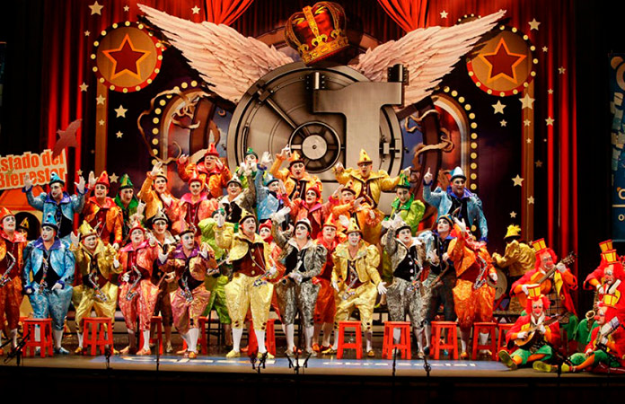

Carnaval
Carnaval de Cádiz
imagenes y videos
Carnaval

Carnaval
El carnaval es una celebración que tiene lugar inmediatamente antes de la cuaresma cristiana.
El carnaval combina elementos tales como disfraces, grupos que cantan coplas, desfiles y fiestas en la calle. A pesar de las diferencias que su celebración presenta en el mundo, su característica común es la de ser un período de permisividad y cierto descontrol.
Origen
El origen de su celebración proviene de las fiestas paganas donde rendían homenaje a Baco (dios romano del vino) y Apis (dios romano con forma de toro del sol y la fertilidad).
Según los historiadores los orígenes de esta festividad remontarían a la sumeria y el Egipto antiguos, hace más de 5000 años, con celebraciones muy parecidas en la época del imperio romano , desde donde se expandió la costumbre por Europa, siendo llevado a América por los navegantes españoles y portugueses a partir de fines del siglo XV. aunque la Iglesia no lo admite como celebración de tono religioso, está asociado con los países de tradición católica y en menor medida con los cristianos ortodoxos orientales; las culturas protestantes tienen tradiciones modificadas, como el carnaval danés.